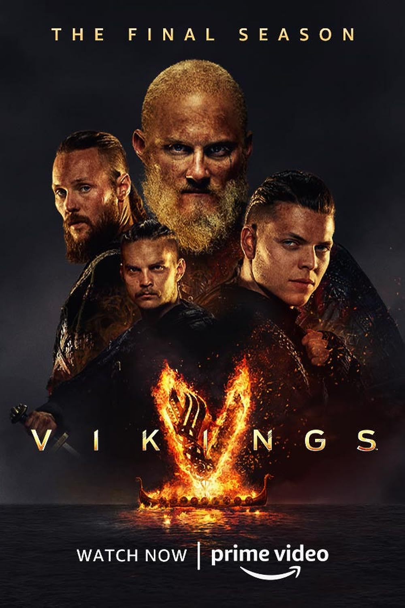

true dectetive

Com Matthew McConaughey e Woody Harrelson, este drama centra-se em dois detetives da Polícia Estatal da Luisiana e examina as suas relações pessoais e profissionais durante uma perseguição de 17 anos a um assassino ritual macabro.
Dark
Os mistérios de Dark crescem à medida que o protagonista Jonas começa a buscar respostas para acontecimentos estranhos que cercam Winde
Unabomber
A série conta a história do agente do FBI Jim "Fitz" Fitzgerald (Sam Worthington), que participou da força-tarefa Unabom e precisou combater a burocracia da instituição enquanto trabalhava na caça de Theodore Kaczynski, também conhecido como Unabomber (Paul Bettany).
Missa da meia-noite

A chegada de um jovem e carismático padre a uma localidade moribunda e desesperada por fé é acompanhada por milagres gloriosos, fervor religioso e mistérios obscuros. Veja tudo o que quiser. Uma série dramática, desconcertante e arrepiante com suspense sobrenatural do criador de "A Maldição de Hill House".
Love Death Robots

Love Death and Robots é uma série de antologia em animação da Netflix destinada ao público adulto, com apresentação de Tim Miller e David Fincher. A coleção de histórias cobre uma variedade de tópicos para adultos, incluindo racismo, governo, guerra, livre arbítrio e natureza humana.
Docotr House
Dr. House. House é uma série de investigação, em que o vilão é a doença e o herói é um médico polêmico, irreverente e anti-social que não confia em ninguém, muito menos em seus pacientes.
Cosmos
Cosmos é uma série de TV sobre o universo produzida por Carl Sagan e Ann Druyan e é um dos mais formidáveis exemplos da amplitude e eficácia que a divulgação científica pode atingir por meios audiovisuais.
Invicible
Conhecido como Omni-Man, seu pai veio de uma raça alienígena chamada Viltrumites para proteger o planeta. Pouco depois de seu 17º aniversário, Mark começa a desenvolver seus próprios poderes, incluindo superforça, velocidade, vôo, cura rápida e alguma invulnerabilidade.
Vikings

A série retrata Ragnar como um fazendeiro que alcança a fama por seus ataques bem-sucedidos na Inglaterra e, mais tarde, se torna um Rei escandinavo, com o apoio de sua família e colegas guerreiros: seu irmão Rollo, seu filho Bjorn Flanco de Ferro, e suas esposas, a escudeira Lagertha e a princesa Aslaug.
Sobrenatural
A série segue os irmãos Sam Winchester e Dean Winchester que viajam por toda a América em um Chevrolet Impala 1967 preto investigando e combatendo eventos paranormais e outras ocorrências inexplicáveis, muitas delas baseadas em lendas urbanas americanas e folclore, assim como diferentes criaturas sobrenaturais.